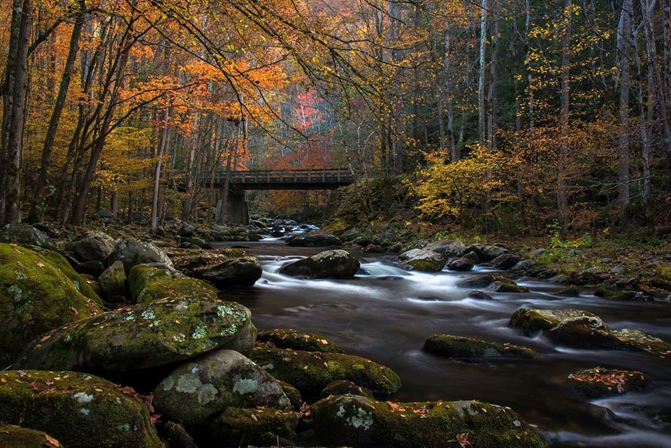

About this page
U.S. National Parks are federally protected lands managed by
the National Park Service (NPS) to conserve natural, cultural,
and historic resources. With 63 designated national parks (like Yellowstone and Yosemite)
and hundreds of other sites, they offer recreational opportunities, protect ecosystems,
and preserve unique geological wonders for future generations.
National Park Service.
GeoVisualization Portfolio.
The United States has 63 national parks, which are congressionally designated protected areas operated by the National Park Service, an agency of the Department of the Interior. National parks are designated for their natural beauty, unique geological features, diverse ecosystems, and recreational opportunities, typically "because of some outstanding scenic feature or natural phenomena." While legislatively all units of the National Park System are considered equal with the same mission, national parks are generally larger and more of a destination, and hunting and extractive activities are prohibited. National monuments, on the other hand, are also frequently protected for their historical or archaeological significance.
National Parks
- Great Smokey Mountain.
- Death Valley.
- Zion National Park.
- Yellowstone.
- Grand Canyon.
- Acadia National Park.
- Everglades National Park.
- Glacier National Park.
- Rocky Mountain National Park.

National Parks Information
| Name | State | Coordinates |
|---|---|---|
| Great Smokey Mountain | NC, TN | 35.68°N 83.53°W |
| Death Valley | CA, NV | 36.42°N 117.08°W |
| Grand Canyon | AZ | 36.05°N 112.14°W |
| Yellowstone | WY, MT, ID | 44.60°N 110.50°W |
| Zion National Park | UT | 37.30°N 113.05°W |
| Acadia National Park | ME | 44.35°N 68.21°W |
| Everglades National Park | FL | 25.32°N 80.93°W |
| Glacier National Park | MT | 48.70°N 113.72°W |
| Rocky Mountain National Park | CO | 40.40°N 105.58°W |
HTML-CSS-JS Understanding
In HTML, what is the difference between an element and an attribute?
An element is a component of an HTML document that defines its structure and content, while an attribute provides additional information about an element (e.g, <p> </p> is the element and align="justify" is the attribute).
Why do we usually separate content (HTML), presentation (CSS), and behavior (JavaScript)?
Separating content, presentation, and behavior allows for better organization, maintenance, and modification, of web page creation. It enables us to focus on specific parts without affecting others.
Which lines in your CSS control the page background, heading appearance, and button styling?
Lines 3-6 (body) control the page background, lines 7-11 (hero) & 76-80 control the heading appearance, and lines 37-45 (button) control the button styling.
What does the JavaScript event listener do, and what visible change does it trigger on the page?
The JavaScript event listener responds to a click event on the button with id "toggle-button". When the button is clicked, it toggles the "hidden" class on the element with id "extra-details", which shows or hides the extra details section.
Why is it useful to preview your webpage in both the editor and the browser while you work?
It allows us to see how our code changes affect the visual appearance and functionality of the page in real-time, helping us to catch errors and make adjustments more efficiently.
Python-generated Linked Dashboard Understanding
Why is city_id useful as a shared key across the map, charts, and table?
city_id serves as a unique identifier for each city, allowing data to be consistently referenced and linked across different visualizations and data structures.
Which function in the notebook is responsible for replacing the placeholder tokens in the HTML template?
The function responsible for replacing the placeholder tokens in the HTML template is the render_dashboard function.
Why does this version embed window.CHART_DATA before the interaction code runs?
So that the chart data is available when the interactive elements are initialized.
What parts of the final dashboard are primarily controlled by Python, which by HTML/CSS, and which by JavaScript?
Python: Data processing, analysis and visualization
HTML/CSS: Structure and styling
JavaScript: Interactive behavior
In the interaction code, what happens when a user clicks a point or bar, and how is the selection cleared?
When user clicks the bar it will highlight the selcted city both in scater plot, table and map. The selection can be cleared by double-clicking the bar or pressing the "ESE" key.